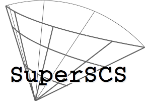

SuperSCS
1.3.2
Home
All pages
Structures
Files
SuperSCS Structures
SuperSCS Fields
All
Variables
a
b
c
d
e
f
g
h
i
k
l
m
n
o
p
q
r
s
t
u
v
w
x
y
All
Data Structures
Files
Functions
Variables
Typedefs
Enumerations
Enumerator
Macros
Pages
Here is a list of all struct and union fields with links to the structures/unions they belong to:
- a -
A :
scs_data
,
scs_work
allocated_memory :
scs_info
alpha :
scs_settings
- b -
b :
scs_data
,
scs_work
beta :
scs_settings
broyden_init_scaling :
scs_settings
- c -
c :
scs_data
,
scs_work
c1 :
scs_settings
c_bl :
scs_settings
cg_rate :
scs_settings
cg_total_iters :
scs_info
coneWork :
scs_work
creator :
scs_conic_probem_metadata
current_mem :
scs_direction_cache
- d -
D :
scs_scaling
date :
scs_conic_probem_metadata
dir :
scs_work
direction :
scs_settings
direction_cache :
scs_work
do_override_streams :
scs_settings
do_record_progress :
scs_settings
do_super_scs :
scs_settings
dobj :
scs_info
dr :
scs_work
dut :
scs_work
- e -
E :
scs_scaling
ed :
scs_cone
ep :
scs_cone
eps :
scs_settings
- f -
f :
scs_cone
- g -
g :
scs_work
gTh :
scs_work
- h -
h :
scs_work
H :
scs_work
history_length :
scs_info
- i -
i :
scs_a_data_matrix
,
scs_cs_sparse
id :
scs_conic_probem_metadata
iter :
scs_info
- k -
k0 :
scs_settings
k1 :
scs_settings
k2 :
scs_settings
kap_b :
scs_work
- l -
l :
scs_cone
,
scs_work
license :
scs_conic_probem_metadata
linsys_total_solve_time_ms :
scs_info
ls :
scs_settings
ls_wspace :
scs_direction_cache
ls_wspace_length :
scs_direction_cache
- m -
m :
scs_a_data_matrix
,
scs_cs_sparse
,
scs_data
,
scs_work
max_iters :
scs_settings
max_time_milliseconds :
scs_settings
meanNormColA :
scs_scaling
meanNormRowA :
scs_scaling
mem :
scs_direction_cache
mem_cursor :
scs_direction_cache
memory :
scs_settings
- n -
n :
scs_a_data_matrix
,
scs_cs_sparse
,
scs_data
,
scs_work
nm_b :
scs_work
nm_c :
scs_work
normalize :
scs_settings
nrmR_con :
scs_work
nz :
scs_cs_sparse
nzmax :
scs_cs_sparse
- o -
output_stream :
scs_settings
- p -
p :
scs_a_data_matrix
,
scs_cone
,
scs_cs_sparse
,
scs_work
pobj :
scs_info
pr :
scs_work
previous_max_iters :
scs_settings
problemName :
scs_conic_probem_metadata
progress_dcost :
scs_info
progress_iter :
scs_info
progress_ls :
scs_info
progress_mode :
scs_info
progress_norm_fpr :
scs_info
progress_pcost :
scs_info
progress_relgap :
scs_info
progress_resdual :
scs_info
progress_respri :
scs_info
progress_time :
scs_info
psize :
scs_cone
- q -
q :
scs_cone
qsize :
scs_cone
- r -
R :
scs_work
R_prev :
scs_work
relGap :
scs_info
resDual :
scs_info
resInfeas :
scs_info
resPri :
scs_info
resUnbdd :
scs_info
rho_x :
scs_settings
Rwu :
scs_work
- s -
s :
scs_cone
S :
scs_direction_cache
s :
scs_solution
s_b :
scs_work
S_minus_Y :
scs_direction_cache
sc_b :
scs_work
sc_c :
scs_work
scal :
scs_work
scale :
scs_settings
setupTime :
scs_info
sigma :
scs_settings
Sk :
scs_work
solveTime :
scs_info
sse :
scs_settings
ssize :
scs_cone
status :
scs_info
statusVal :
scs_info
stepsize :
scs_work
stgs :
scs_data
,
scs_work
- t -
t :
scs_direction_cache
thetabar :
scs_settings
tic :
scs_timer
toc :
scs_timer
total_cone_time :
scs_cone_work
tRule :
scs_settings
- u -
U :
scs_direction_cache
u :
scs_work
u_b :
scs_work
u_prev :
scs_work
u_t :
scs_work
- v -
v :
scs_work
verbose :
scs_settings
- w -
warm_start :
scs_settings
wu :
scs_work
wu_b :
scs_work
wu_t :
scs_work
- x -
x :
scs_a_data_matrix
,
scs_cs_sparse
,
scs_solution
- y -
y :
scs_solution
yamlVersion :
scs_conic_probem_metadata
Yk :
scs_work
Generated on Tue Aug 28 2018 15:45:56 for SuperSCS by
1.8.6
 1.8.6
1.8.6